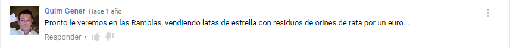

Transcription:
Friend, here friend! Barcelona, friend, me too Barcelona! Look: Ronaldinho, Puyol, Football club Barcelona, look, Football Club Barcelona. 25th August, come to the Estrella Damm Gamper Trophy friend, come!
This video clip of 2004 was an advertisement for the Gamper one-match-trophy that is played at FC Barcelona’s (Barça from now on) stadium every year at the beginning of each season. The advertisement is produced by Estrella Damm, Catalonia’s most important beer company and one of the main sponsors for Barça.
The video shows a white backpacker (we assume he is Catalan) randomly walking around what seems a typical Saharan landscape: hot weather, palms, camels, Bedouins. A man sitting in front of his primitively constructed house calls the attention of the traveler, he mistakes the beer’s logo on the traveler’s t-shirt for Barça’s logo. He is very excited to show his devotion for the football team as he shows the traveler his socks with Barça’s colors as well as a photograph of the team hanging in one of the house’s walls. His confusion of the beer’s logo for Barça’s logo is explained when we see the photograph: before the players is a signboard that reads ‘Estrella Damm’. Being alien to capitalist practices, he ignores the concept of a sponsor and therefore thinks that what is written in the signboard is the club’s name.
Bedouins are a semi-nomadic culture of which we know little about. They are presented here as exotic, welcoming and primitive. Their culture is alien to us, we ignore their philosophy and life-style beyond what is portrayed here (that they ride camels and have little to no material possessions), and nonetheless the Bedouin man knows football and is a fan of Barça. Barça, and more generally football, speak a global language, in every corner of the world there are football fans, regardless if they are such outcasts to global capitalism as the Bedouins. This is a message that is constantly reinforced by the club: Barça is more than just a privately owned (and super lucrative) football team, it is a set of values that goes well beyond football, its appeal is universal –noticeably Barça’s slogan is Més que un club (more than just a team). This is the reason why it doesn’t matter that the Bedouin man probably didn’t buy the Barça items he owns but rather he got them randomly; Barça spreads its love universally and for free, and accepts to be loved back in whatever modest ways. In fact, the Bedouin’s fandom is one that the club promotes, his passion for Barça is equally if not more legitimate than that of the English tourist that spends ninety euros for an official kit in a touristic trip to Barcelona.
However the depiction of the Bedouin man is by no means aimed at making him appear noble or dignified. The way in which he calls the backpacker’s attention with the word amigo (translates in English as friend) and his overwhelming insistence reminds the Catalan audience of a common image of the Arab person as loud, insistent and onerous. The fact that the spot is produced by Estrella Damm and that the Bedouin man mistakes the beer’s name for that of Barça’s confers this a complex meaning I will now try to sketch out.
In Barcelona, especially in the neighborhood of Raval (where I was born and raised) which is part of the old town, there is an extensive Arab community. Most of the adult Arabs are immigrants, therefore they never learnt the Catalan language – for decades since the fall of Franco’s dictatorship the Catalan government has been producing policies aimed at establishing Catalan as the official language, one of which is making education in Catalan compulsory. This already prevents them from integrating into the Catalan society. In fact adult immigrants that properly speak or make effort to speak Catalan are rewarded by appearing on public TV as the model immigrant who is willing to integrate to our society and therefore is eligible to attain a higher social status than those who only speak Spanish. The Catalan-speaking migrant is the good migrant. The non-Catalan-speaking migrant is ultimately an undesirable migrant, as he does not make sufficient effort to be part of the society to which he has migrated, he is either lazy or ignorant or both, he will never be a Catalan but will always remain an Arab. In this context the word amigo (which is not Catalan but Spanish) has gained a particular connotation, by some unwritten social rule, amigo is the word that autochthonous people use to appeal to Arabs and vice versa. Even though the word itself does not have a negative connotation, albeit the contrary, in the particular context of the relation between autochthonous and Arabs, the term is made into a slightly racist way to appeal to any Arab. Barça as an institution and Estrella Damm do all their branding and marketing in Catalan, which is why the fact that the Bedouin man doesn’t speak Catalan but Spanish in the spot (except in the last bit where he says the trophy’s date) is a clear sign of the racism loaded onto it. One of the comments of the video of the spot on Youtube epitomizes the racist discourse of it very well:
Translation: “We will soon see him [the Bedouin] at the Ramblas [main street of Barcelona’s old town], selling cans of estrella with residues of rat urine for one euro…”
If you have traveled to Barcelona in the recent years, you will have noticed how the old town (which is extremely overwhelmed by tourism) is filled with Arab migrants (mostly Pakistani) mostly in irregular legal status selling cans of the Estrella Damm beer. These sellers wander around the streets of the old town offering beer using what has become a very usual phrase: cerveza, beer, amigo? Since there are a lot of these sellers, they are regarded by the local people as annoying and irritating. And since most of them don’t speak Spanish very well, the word amigo is the nexus that allows the sellers to communicate with the locals and vice versa. Thus, by calling the sellers (or generally any Arab) amigo, one is already confining them to a marginal place in society, that of the ignorant, low-skilled migrant that is forced to work during the night-time selling cans of beer for one euro each.
At the same time, Estrella Damm’s position in this phenomenon is very controversial. The company is a flagship of the Catalan economy and therefore it is also a brand of Catalanness. The beer sellers are attacked both by the company and the city council which portrays them as guilty for people illegally drinking in the street as well as the soiling that the empty cans thrown around produce. They are also attacked by local businesses, which accuse them of being illegal sellers that steal the job of honest working people. However, albeit efforts by the company to assure that it takes all possible care in assuring that their cans don’t end up in the hands of street sellers, the incredibly huge amount of cans that are sold in the streets every night makes it obvious that the company is well aware that a significant percentage of the production is sold in this way – and the company is most certainly not interested in stopping this.
YouTube, (2011). Anuncio Estrella Damm- Futbol Club Barcelona, amigo!. [online] Available at: https://www.youtube.com/watch?v=eSUar5_1-gU [Accessed 25 Feb. 2016]. (This is the video that is embedded in the document, the one I found with higher resolution even if it’s not ideal)
YouTube, (2006). Anuncio Estrella Damm - Mochilero Barça. [online] Available at: https://www.youtube.com/watch?v=n3TaW4zezYI [Accessed 25 Feb. 2016]. (this is the video with lower resolution which has the comment I cited)
Damm.es, (2009). .: DAMM :.. [online] Available at: http://bit.ly/1R48I7T [Accessed 25 Feb. 2016]. (In this site there are statements of the company’s policy such as how they control distribution and how the company “has always been linked to and part of the country’s society and connects to it in a very special way”.)
W110.bcn.cat, (2012). Si te gusta la cerveza, no la compres a los lateros | Noticias | Joves | Ayuntamiento de Barcelona. [online] Available at: http://bit.ly/1QA7T68 [Accessed 25 Feb. 2016]. (This is an article in Barcelona’s council website promoting a campaign against lateros or street beer sellers)
Masala.cat, (2012). Limpiar la imagen de Estrella Damm degradando la de los lateros [online] Available at: http://masala.cat/ limpiar-la-imagen-de-estrella-damm-degradando-la-de-los-lateros/ [Accessed 25 Feb. 2016]. (This is an article in Spanish talking about an anti-street-sellers campaign’s video that the company produced in cooperation with the city council. I wasn’t able to find the video online but on the article we can see some screenshots, the first of them shows the hand of a seller coming out of a garbage container, clearly representing the seller as garbage.)